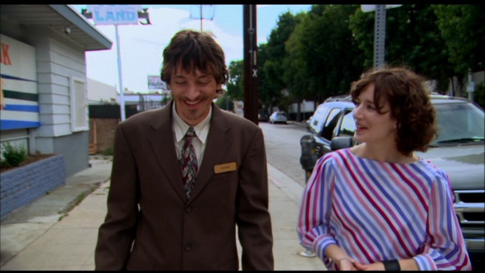

Kezdőlap Új film beküldése
Krasznahorkai László a következőt írta: "Az internet (...) az eddigi legbiztosabb út az
örökkévalóságba.".
Hogy ez igaz-e, mindenki döntse el maga, miután megnézte a listámban szereplő filmeket.
Figyelem!
A lista
erősen szubjektív.
Social Network - A közösségi háló
A film adatai
Súgó
A táblázatban a filmre vonatkozó adatokat (Bemutató, Angol cím, imdb pontszám tüntetjük fel.)
Bemutató: 2010. október 1.
Angol cím: The Social Network
IMDb értékelés: 7.7/10
Mark Zuckerberg jobban ért a számítógépekhez, mint a csajozáshoz. A Harvard egyetem diákja ideje nagy részét a gépe előtt tölti. 2003-ban új ötlettel áll elő: egy olyan oldalt indít a világhálón, ahol a haverok közösségi életet élhetnek.
A kollégiumi szobából indult Facebook valóságos kommunikációs forradalmat hozott, és alapjaiban változtatta meg a világot, az emberi kapcsolatokat - és megváltoztatta az alkotóját is. Hat esztendővel és ötszázmillió ismerőssel később Zuckerberg a világ legfiatalabb milliárdosa.
Egykor békés, nyugodt életről álmodott, a siker azonban felkavarta mind a szakmai, mind a magánéletét.
A Social Network - A közösségi háló a korszellemet grabancon ragadó, aktuális, de időtálló munka, ami nem csak, hogy sokkal jobb móka, mint két óra facebookozás, de biztos, hogy évek-évtizedek távlatából is élvezhető lesz.
{{{Jelenet a Social Network - A közösségi háló című filmből}}}
A filmben nagy figyelmet fordítottak arra is, hogy a megjelenő forráskódok a témához kapcsolódjanak. Íme egy példa:
{{{A filmben szereplő forráskód részlete}}}
A filmzenéből Trent Reznor and Atticus Ross: A Familiar Taste című száma a kedvencem.
A film adatai
Súgó
A táblázatban a filmre vonatkozó adatokat (Bemutató, Angol cím, imdb pontszám tüntetjük fel.)
Bemutató: 2014. január 10.
Angol cím: Her
IMDb értékelés: 8/10
Los Angelesben, a közeli jövőben él Theodore Twombly író, aki abból él, hogy megható, személyes leveleket ír mások számára. A férfi rossz passzban van, próbálja kiheverni, hogy tönkrement egy hosszú kapcsolata. A számítógépein dolgozik és játszik.
Egy nap unalmában letölt egy új, intelligens operációs programot. Így találkozik Samantha-val, pontosabban a hangjával, amely valósággal megigézi. Kiderül, hogy Samantha okos és éleslátó, érzékeny és meglepően vicces. A kezdeti barátságuk egyre jobban elmélyül.
Spike Jonze A nővel gyakorlatilag megalkotta a tökéletes szerelmesfilmet, amelyből egyszerre derül ki, hogy ez az egész felhajtás mekkora baromság, és hogy nem érdemes élni nélküle.
A film adatai
Súgó
A táblázatban a filmre vonatkozó adatokat (Bemutató, Angol cím, imdb pontszám tüntetjük fel.)
Bemutató: 2005. augusztus 5.
Angol cím:Me And You And Everyone We Know
IMDb értékelés: 7,4/10
Miranda July, multimédia-performer és zenész éleslátó és rendkívül szórakoztató filmet készített olyan magányos emberekről, akik megpróbálnak kapcsolatot teremteni környezetükkel. Azokat a külső és belső gátakat mutatja meg, amik magányos, modern világunkban gyakran meghiúsítják az egymással való kapcsolatteremtést. July szerint "a történet elérhetetlen vágyakat tápláló gyerekekről és felnőttekről szól, akik olyan korban élnek, mikor a felnőtté válás digitális folyamat és a valóság esztétikai döntésünk függvénye".
A Miranda July korábbi műveiben felvetett témák folytatásának tekinthető Te meg én és minden ismerősünk leleplezi az emberek titkolt érzéseit, vágyait és motivációit. Az eredmény egy gyönyörű, egyedi film, amely észrevétlenül ejti rabul az ember szívét.
{{{Jelenet a "Te meg én és minden ismerősünk" című filmből}}}
A film adatai
Súgó
A táblázatban a filmre vonatkozó adatokat (Bemutató, Angol cím, imdb pontszám tüntetjük fel.)
Bemutató: 2015. november 21.
Angol cím:Deep web
IMDb értékelés: 7,1/10
Az internet nem csak hírportálokból, közösségi oldalakból és cuki állatos videókból áll. A keresőmotoroktól elzárva ott húzódik a felszín alatt az úgynevezett deep web, vagy más néven dark web, a világháló sötét oldala. Anonimitásba burkolózott felhasználók szörföznek az internet sötét hullámain, ahol burjánzik a drog- és fegyverkereskedelem, és mindenre van kereslet, ami illegális.
Alex Winter dokumentumfilmje mélyen elmerül a deep web titkaiban. Kiderül, hogy az igazságszolgáltatásnak nem csupán az utcán kell üldöznie a bűnözőket, hanem a virtális világban nyüzsgő arctalan törvényszegőkkel is kénytelen megküzdeni. Mi, átlagfelhasználók nem is sejtjük, micsoda üzelmek folynak az internet rejtett bugyraiban. Egészen addig, amíg meg nem nézzük a Deep Web dokumentumfilmet.
{{media/deepweb.jpg}}
{{{Jelenet a Deep Web című filmből}}}
Az alábbi angol nyelvű prezentáció bemutatja, hogy mi is az a deep web
{{slideshare}}
Készítette: Gipsz Jakab
(gipszjakab@mailinator.com)
1117
Budapest,
Nevenincs u. 17